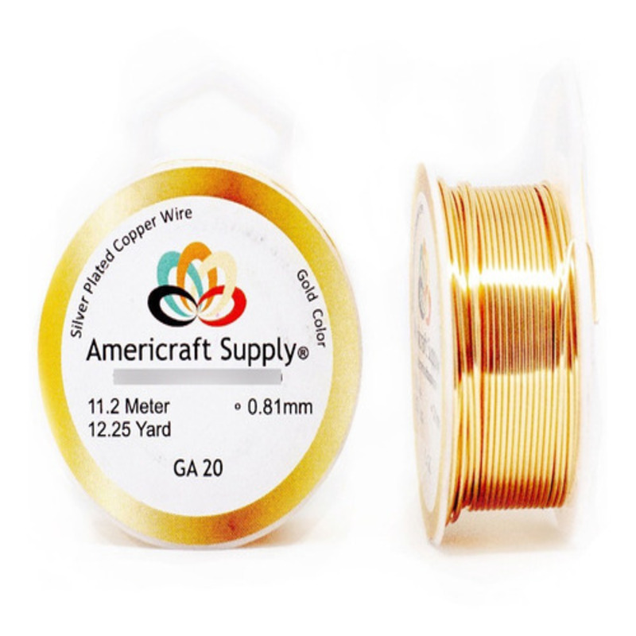
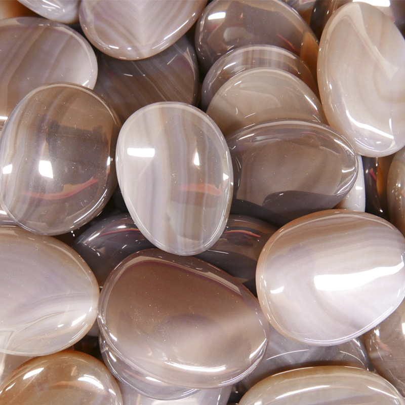
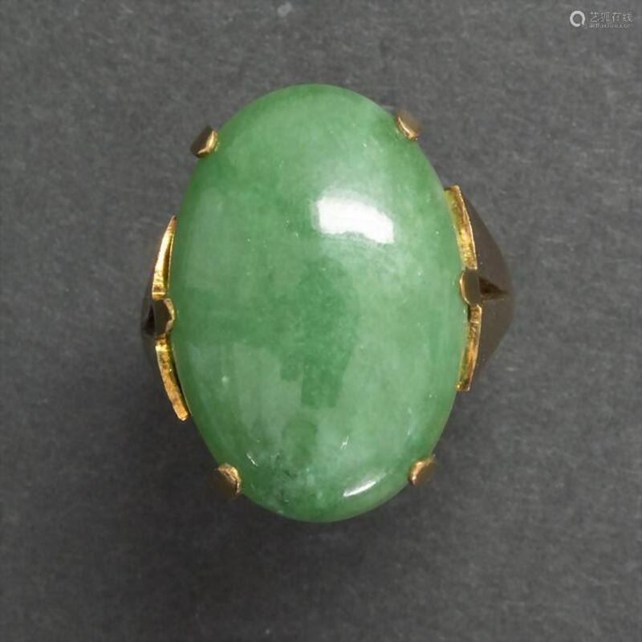

Conoce los materiales con los que trabajamos
-
Alambre bañado en oro: Baño en oro, es una técnica para aplicar capas de oro a otros metales. Las capas
de oro se miden en micras, así que este tipo de bañado puede tener 0,1- 0,2 -0,3 -…1 micras. Por ello,
se recomienda seguir los consejos de cuidados para las joyas que tienen este tipo de bañado y así
conservar la pieza en el mejor estado posible.
-
Murrina: Es un cristal de distintos colores y patrones proveniente de Venecia. Principalmente se usaba
para los jarrones de vidrio venecianos o esculturas de vidrio de Murano, sin embargo, se comenzó a
emplear para usarse en los accesorios, convirtiéndose en tendencia hasta el día de hoy.
-
Jade: El jade es una roca ornamental cuyo color puede ser blanco, o distintos tipos de verdes como por
ejemplo, el verde esmeralda, esto se debe por los minerales que la componen. A lo largo de la historia,
tras experimentar un importante proceso de revalorización, el material que ha pasado a ser más caro que
el oro, es el Jade.
-
Ágata: Es un conjunto de pequeñas cristalizaciones del cuarzo. Sus colores pueden ser: gris, amarillo,
naranja, blanco, azul, marrón, rosa, entre otros.
-
Ópalo: Es un mineral que tiene una composición similar a la del cuarzo. Viene en colores como: negro,
gris, blanco, marrón, púrpura, amarillo, naranja, verde, azul-verdoso e incluso se puede hallar como
incoloro.
-
Cristal Checo: También llamado como cristal de Bohemia, es uno de los cristales mejor valorados en el
mundo por su transparencia y por el cuidadoso tallado que suelen incluir las piezas hechas de dicho
material.


